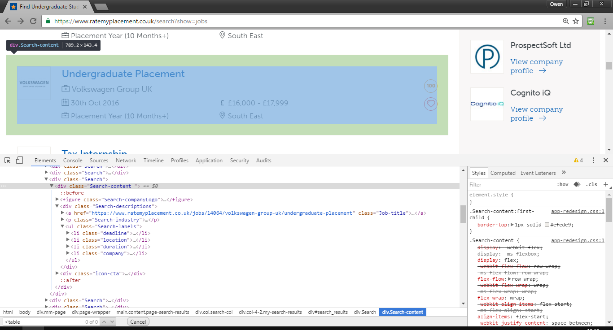
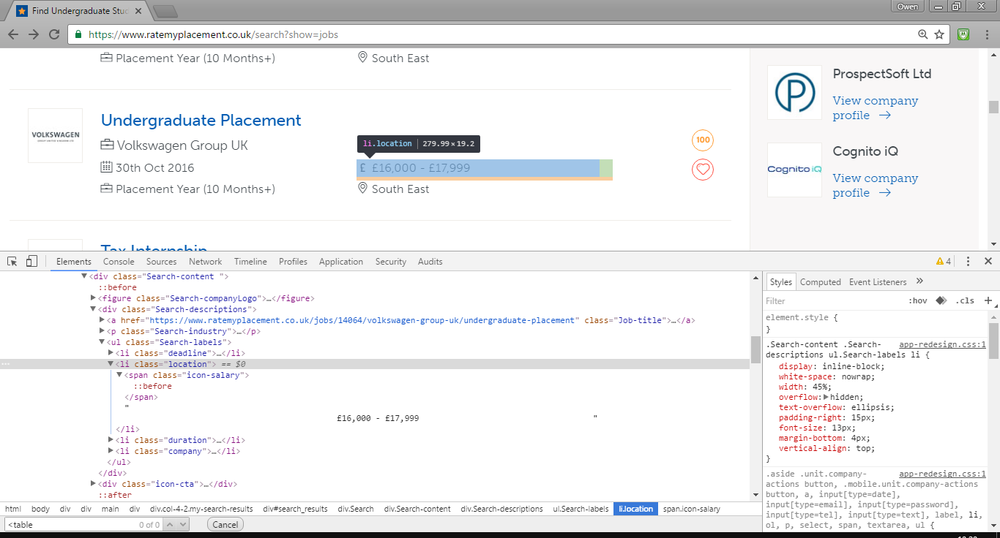
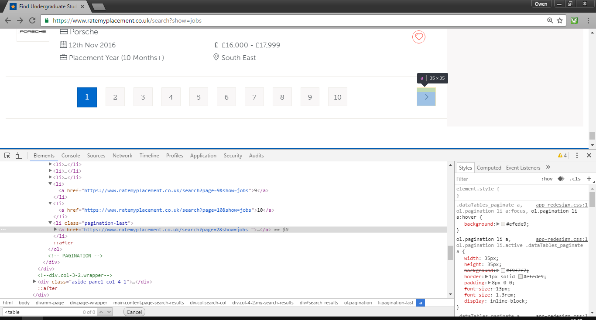
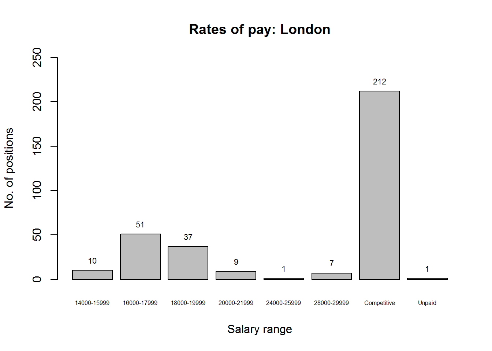

Context
On this site’s homepage I allude to the fact that there are ‘other things’ I am generally supposed to be doing instead of putting together these projects. One such ‘other thing’ is the time-devouring task of researching work placements (I am hoping to complete a year-long placement from next summer as part of my degree).
Several job descriptions which have caught my attention have something in common (other than generally being data science related): they don’t list a salary. At least, not explicitly. Instead they advertise a “competitive” salary or, on occasion, hint that applications to the position should include “salary expectations”.
After seeing this for the third or fourth time, I realised I didn’t have any “salary expectations”. So once again abandoning the task I had planned on dedicating the weekend to, I set forth on this project.
Finding the average placement year salary
Source of information
A quick Google search of ‘placement year uk’ brings up RateMyPlacement as the first result. This website claims to be “the TripAdvisor” for placements - the following paragraph can be found on their ‘About’ page:
Our website is specifically targeted towards undergraduates, offering current university students the jobs they need to get their careers started. RateMyPlacement is the leader in this niche market, advertising more undergraduate placements, internships, vacation schemes and insights than any other website.
I decided to use this website, rather than a more general job-listing site such as Indeed, as my source since it guarantees that any jobs listed will be of the sort I am looking for - specifically, placement jobs, rather than full-time or the ambiguous ‘temporary’ or ‘contract’ jobs listed on many other sites.
Loading packages into R
I have used the magrittr package’s ‘pipe’ operator (%>%) rather extensively, since I find it greatly improves the readability of the code. It is particularly useful when performing many sequential operations on the same object, as will be seen shortly.
The RCurl and XML packages are used to deal with the initially-overwhelming HTML code.
library(magrittr)
library(RCurl)
library(XML)‘Detective work’
To begin with, we need to have a look at our target website and work out exactly where the ‘interesting’ parts are located. I’m using Google Chrome, but many other web browsers will be equally suitable for carrying out the following steps.
This is the page that initially loads:
It is clearly a list of search results, although we currently don’t exactly what form they are in - i.e. if they are laid out in an HTML table (which would simplify matters) or not (which is more likely!). We can find out using the developer console, which can be opened by pressing F12.
The ‘Inspect element’ button at the top left of the console can be used to quickly locate the section of HTML code responsible for a given feature on the page. Let’s have a look at one of the search results.

Each result is within a pair of <div> tags (no tables in sight, unfortunately). Within each result there are several pieces of information. Only one of these is of interest to us (for this project at least): the salary. A little further inspection shows that this information is contained in one element of an unordered list, specifically - and rather confusingly - in the <li> element which has class=location, presumably due to some previous website redesign.

There is the option to refine the search results further, but for now we’ll use the unfiltered set of results. It is worth noting that we don’t need to filter by duration since the site uses pro rata annual salary figures for all listed placements.
Extracting salaries
Now we know where the information we want is, we can begin the process of importing it into R and tidying it up. I will use the %>% operator here, and eventually the aim is to end up with a numeric vector containing each job’s (mean) salary - so I will work with an object called salaries, even though initially it is very different to its final form.
The first stage is to load the raw HTML file into R. The getURL function (from the RCurl package) imports the HTML document as a single character string - which needless to say is very long (nchar(salaries) reveals it is 205604 characters long, to be precise) and not particularly readable.
salaries <-
"https://www.ratemyplacement.co.uk/search?show=jobs" %>%
getURL()substring(salaries, 100001, 101000)## [1] " <h2 class=\"Job-titleHeader\">Engineering Coordinator Placement</h2>\n </a>\n <p class=\"Search-industry\"><i class=\"icon-company\"></i>\n Volvo Group UK</p>\n <ul class=\"Search-labels\">\n <li class=\"deadline\"><span\n class=\"icon-calendar\"></span> 31st Oct 2016 </li>\n <li class=\"location\"><span class=\"icon-salary\"></span>\n Competitive\n </li>\n <li class=\"duration\"><span class=\"icon-company\"></span> Placement Year (10 Months+)</li>\n <li class=\"company\"><span class=\"icon-location\"></span> West Midlands</li>\n </ul>\n </div>\n <div class=\"icon-cta\">\n\n \n <a href=\"#\" class=\"circle-cta my-wishlist tracker login\"\n data-message=\"You need to be logged in to add a job to your tracker\"\n "
Luckily, the XML package can be used to manipulate this awkward mass of text into something much easier to work with in R. First, htmlParse is used to parse the HTML code so that each set of tags is represented as a ‘node’. The result of this can then be used in xpathApply with two other arguments.
The first is an XPath query //li[@class='location'], where:
-
//lifinds all ‘list element’ (<li>) nodes -
[@class='location']finds the subset of these nodes which have aclassattribute oflocation(recall that this is where the salaries are stored)
The second is what we want to return from each of these nodes, which in this case is its xmlValue. The values are returned by xpathApply in list form.
salaries <-
salaries %>%
htmlParse() %>%
xpathApply("//li[@class='location']", xmlValue)## [[1]]
## [1] "\n Competitive\n "
##
## [[2]]
## [1] "\n Competitive\n "
##
## [[3]]
## [1] "\n £18,000 - £19,999 "We now have the data we want - although each salary is still in an untidy character vector. To tidy each element we can first remove any of the following from the string:
-
- [space]
-
£ -
,
Each salary is either not given (listed as “Competitive”) or is given as a range. We can split each character vector at the ‘-’ symbol (if it is present) to obtain separate character vectors containing the lower and upper values of the range.
salaries <-
salaries %>%
lapply(gsub, pattern = "\\n| |£|,", replacement = "") %>%
lapply(strsplit, split = "-")salaries[1:3]## [[1]]
## [[1]][[1]]
## [1] "Competitive"
##
##
## [[2]]
## [[2]][[1]]
## [1] "Competitive"
##
##
## [[3]]
## [[3]][[1]]
## [1] "18000" "19999"Initially I had planned on calculating the midway point for each range of salaries. However there is an easier option, given that the (eventual) vector of salaries will be averaged anyway. Averaging each pair of range values, and then averaging all of the resulting values, is equivalent to simply averaging all the range values:
\[\frac{\frac{(a^{(1)}_1 + a^{(1)}_2)}{2} + \frac{(a^{(2)}_1 + a^{(2)}_2)}{2} + \ldots + \frac{(a^{(n)}_1 + a^{(n)}_2)}{2}}{n} = \frac{(a^{(1)}_1 + a^{(1)}_2) + \ldots + (a^{(n)}_1 + a^{(n)}_2)}{2n}\]
So we can simply unlist each pair of range values and then unlist the whole salary list to obtain a character vector. Using as.numeric then changes this to a numeric vector, where all the “Competitive” (i.e. unlisted) salaries are coerced to NA. The mean of this vector (ignoring NAs) is the average salary for all the positions listed on the webpage.
salaries <-
salaries %>%
lapply(unlist) %>%
unlist() %>%
as.numeric()## Warning in function_list[[k]](value): NAs introduced by coercionsalaries[1:10]## [1] NA NA 18000 19999 NA NA NA NA 16000 17999mean(salaries, na.rm = TRUE)## [1] 17307.19Multiple pages: creating URLs
Now that we can get the mean salary for one page, we can consider the fact that there are actually multiple pages of positions - and with positions being added and removed continuously, the number of pages we need to get data from could change.
The first task is to find how many pages of results we need to look at. As before, we start by importing and parsing the first page of results, but this time we will use a different XPath query.
First we must have another look at the webpage - but this time we are interested in the ‘pages’ bar at the bottom of the list of results:

We want the page number that appears in the button immediately to the left of the ‘Next page’ button. We can construct the XPath query //li[@class='pagination-last']/preceding::li[1]:
-
//lifinds all ‘list element’ nodes on the page -
[@class='pagination-last']finds the subset of these nodes withclassattributepagination-last(there is only one such node, which is the ‘Next page’ button) -
/preceding::li[1]finds, working backwards from the current node, the 1st ‘list element’ node
The xmlValue of this node is the number appearing in the last numbered button - i.e. the number of results pages. It is currently in character vector form and inside a list (courtesy of xpathApply), but it can be extracted easily enough.
num_pages <-
"https://www.ratemyplacement.co.uk/search?show=jobs" %>%
getURL() %>%
htmlParse() %>%
xpathApply("//li[@class='pagination-last']/preceding::li[1]", xmlValue) %>%
unlist() %>%
as.numeric()num_pages## [1] 10
To manually navigate to a different results page we simply need to add page=[page number]& to the search string in the page address; so we can make a list of all the results pages as follows.
urls <- function(x) paste0("https://www.ratemyplacement.co.uk/search?page=",
x, "&show=jobs")
pages <- lapply(1:num_pages, urls)>## [[1]]
## [1] "https://www.ratemyplacement.co.uk/search?page=1&show=jobs"
##
## [[2]]
## [1] "https://www.ratemyplacement.co.uk/search?page=2&show=jobs"
##
## [[3]]
## [1] "https://www.ratemyplacement.co.uk/search?page=3&show=jobsFinding the mean salary
We can now run the salary-extracting code on each page in turn. We’ll store the full list salaries from each page for later analysis.
Note: There are three sponsored results which appear at the top of each results page - these are the same on all pages, so are not counted for any pages except the first (i.e. for all but the first page, the first 4 elements of salaries are removed, corresponding to two “Competitive” listings and one numerical listing - the make-up of the sponsored listings at the time of writing).
page_salaries <- vector(mode = "list", length = 0)
page_avg_salary <- vector(mode = "numeric", length = num_pages)
for (i in 1:num_pages) {
salaries <-
pages[[i]] %>%
getURL() %>%
htmlParse() %>%
xpathApply("//li[@class='location']", xmlValue) %>%
lapply(gsub, pattern = "\\n| |£|,", replacement = "")
# Pause to add list of salaries to page_salaries
page_salaries <- append(page_salaries, salaries)
# Resume pipe
salaries <-
salaries %>%
lapply(strsplit, split = "-") %>%
lapply(unlist) %>%
unlist() %>%
# Ignore 'Coercion to NA' warnings since this is expected
as.numeric() %>%
{if (i != 1) tail(., -4) else .}
page_avg_salary[i] <- mean(salaries, na.rm = TRUE)
}So now we have a list of all salaries, and vector of the average salaries of all the positions on each results page. If we calculate the mean of this vector then we will have the mean salary across all the positions.
mean(page_avg_salary)## [1] 17878.68We can also visualize the proportions of different salaries being offered:
page_salaries <-
page_salaries %>%
unlist() %>%
as.factor()
p <- plot(page_salaries, main = "Rates of pay", ylim = c(0, 400),
xlab = "Salary range", ylab = "No. of positions", cex.names = 0.5)
text(p, y = summary(page_salaries), label = summary(page_salaries), pos = 3,
cex = 0.7)
This reveals how nearly twice as many positions are advertised without an explicit salary as those advertised with one. (It also reveals that one of the salaries coerced to NA earlier was in fact “Unpaid”, rather than “Competitive”. Although it shows I was a little careless earlier when I stated that all non-numeric elements were “Competitive”, it doesn’t have any effect on the calculations.)
London-specific salaries
Although I do have a general dislike for London, I am slowly coming to terms with the fact that many companies with data science positions are young start-ups, and the vast majority of them are located in the capital. As such, and knowing that London is more expensive than other areas of the country, I thought I would re-run the code on the placements listed with locations ‘Central London and City’ and ‘Greater London’ only. This extra filtering is done by adding &location=CTY,GTL to the end of the HTTP address. The results are as follows:
mean(page_avg_salary_L)## [1] 19015.6This is, as expected, higher than the nationwide figure.
A quick look at the relevant plot reveals some more information:

Notice how the highest-paid positions are all in London (between the nationwide and London plots, there is no difference in the bars for the two highest salary bands). The significant decrease is in the number of lower-than-average-salary positions.
Project evaluation
It turns out that the average annual placement position salary is just under £18,000, increasing to slightly over £19,000 for London-based placements.
This was my first attempt at a project using non-tabluar web-based data. Moreover, I had no previous experience with the HTML-manipulating packages in R, and as per usual a large amount of reading and experimentation was necessary before I managed to achieve what I was aiming for. Perhaps it is a little ambitious to call this a ‘web scraping’ project, but I believe it has given me some of the fundamental knowledge needed to put together more complicated projects involving web data in the future. An added bonus was my discovery of the XPath language, which might have come in handy for one of my previous projects.
All in all, I shall consider this a weekend well spent, although it has no doubt come at the cost of a few late-night maths sessions later in the week.